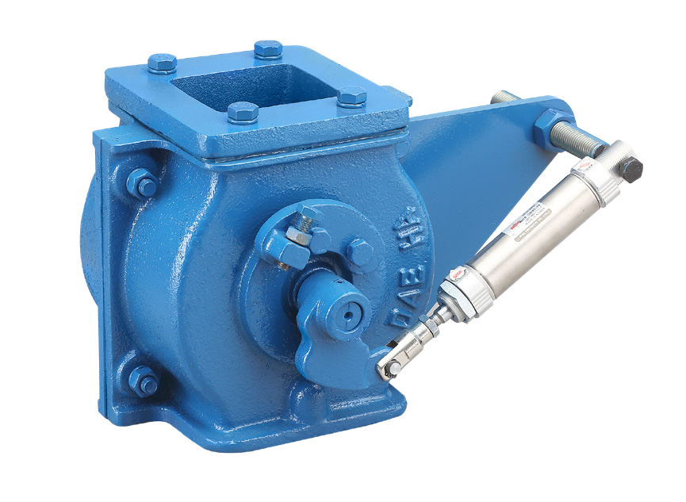

블라스트 부품 / 쇼트게이트
쇼트게이트 Shot Gate
블라스트 탱크와 상부 연마재 저장 호퍼(Hopper) 사이의 관로에 설치되어, 탱크로 대량·지속 유입되는 쇼트볼·그리트를 중간에서 개폐 제어하는 복동 공압 슬라이더 방식 쇼트게이트입니다.

작동 원리 및 구조적 특징 Features & Mechanism
- 하부 필러밸브 부하 경감: 블라스트 탱크로 쇼트볼이 유입되기 전 관로에서 연마재를 중간 차단·제어함으로써, 하부 필러밸브(Filler Valve)에 가해지는 쇼트볼 하중을 크게 줄여줍니다.
- 복동 공압 실린더 슬라이더 방식: 복동식 실린더(Ø32mm, 스트로크 75mm)에 의한 슬라이더 구조로 개폐 및 연마재 유입이 부드럽습니다.
- 고강도 주물 바디: 본체 전체가 주물로 제작되어 내마모성이 우수하며 탱크 내·외부 압력에 견고합니다.
- 간편한 설치 및 정비: 볼팅 체결 구조로 설치·교체가 용이하며, 미작동 시 쇼트볼 유입을 차단할 수 있어 하부 블라스팅 탱크 점검 및 수리가 수월합니다.
주요 사양 Specifications
| 모델 (Model) | DSG-75 |
|---|---|
| 실린더 사양 (Cylinder) | 복동식 (Double Action) · 내경 Ø32mm (I.D) · 스트로크 75mm |
| 파일럿 포트 (Pilot Port) | PT ⅛" |
| 바디 재질 및 체결 | 주물 일체형 바디 · 볼트 체결식 |
견적·규격 문의 051-319-2332 · daehatw@daum.net